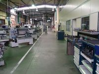

En cualquier actividad laboral, para conseguir un grado de seguridad aceptable, tiene especial importancia el asegurar y mantener el orden y la limpieza. Son numerosos los accidentes que se producen por golpes y caídas como consecuencia de un ambiente desordenado o sucio, suelos resbaladizos, materiales colocados fuera de su lugar y acumulación de material sobrante o de desperdicio.
A continuación se citan algunas directrices que deberemos seguir para mantener los lugares de trabajo limpios y ordenados:

- Las zonas de paso, salidas y vías de circulación de los lugares de trabajo y, en especial, las salidas y vías de circulación previstas para la evacuación en casos de emergencia, deberán permanecer libres de obstáculos de forma que sea posible utilizarlas sin dificultades en todo momento.
- Los lugares de trabajo y sus respectivos equipos e instalaciones, se limpiarán periódicamente y siempre que sea necesario para mantenerlos en todo momento en condiciones higiénicas adecuadas. Se eliminarán con rapidez los desperdicios, las manchas de grasa, los residuos de sustancias peligrosas y demás productos residuales que puedan originar accidentes o contaminar el ambiente de trabajo.
- Las operaciones de limpieza no deberán constituir por sí mismas una fuente de riesgo para los trabajadores que las efectúen o para terceros, realizándose a tal fin de la forma más segura y con los medios más adecuados.